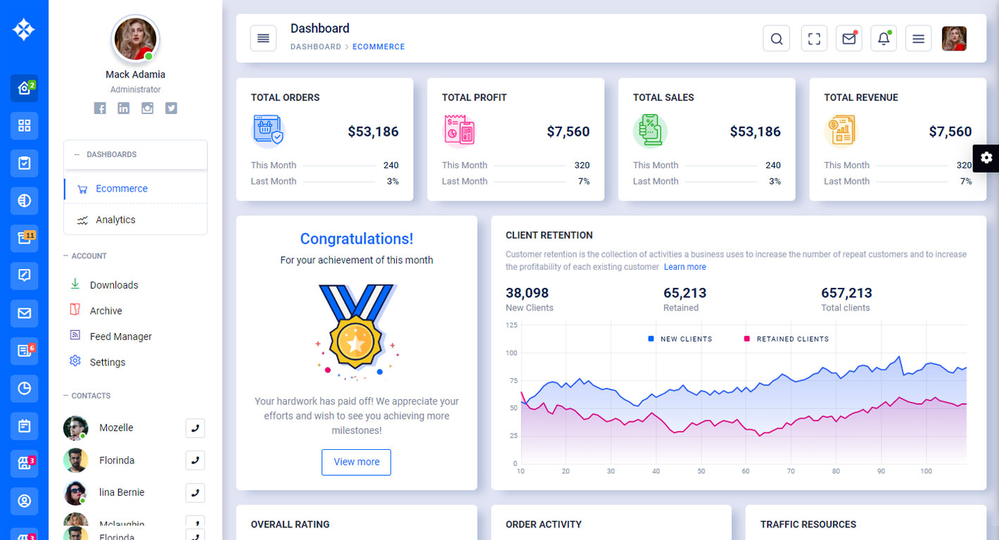
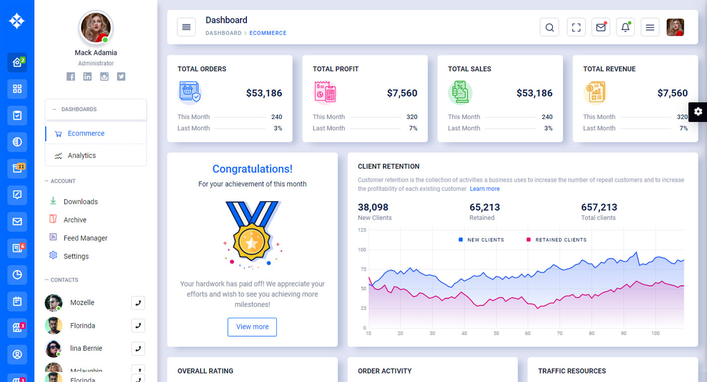

Main-Template

Thank you for purchasing our admin template. Feel free to contact us any time. We have a dedicated team to provide you the best support. If you want any queries please contact live chat or email : sprukotechnologies@gmail.com
If You Love Our Template Design Please don't forgot to rate it. Thank you so much!
Admix– is a modern, and creative admin template using modern and minimal design. It is fully flexible user-friendly and responsive. Admix admin template is powered with HTML 5, SASS, & Bootstrap 4 which looks great on Desktops, Tablets, and Mobile Devices. This Template Includes 107 HTML Pages & 70+ Plugins more UI elements . No Need to do hard work for this template customization. We already designed it and you can easily design your website just how you like it. Advanced Form-Elements like Date pickers, form elements are included. This template using Bootstrap4 framework. This admin template is fully 100% Premium Admin Templates quality. This template designed for using HTML5,CSS3,Jquery. After Purchased this template you will get All HTML files,CSS, Scss and JS Files.
It has super clean flat user interface admin Backend design, easy customizable components and widgets.The Template comes with a awesome unique design also we ensure you can easily design admin template.
it is a fully responsive layout for all type of devices. Works on all major web browsers, Desktop, iPhone, iPad, Tablet and all other smart phone devices
Once you Purchase Admix – Premium dashboard ui bootstrap rwd admin html5 template, you will be able to get free download of all future updates.

assets/
├── css/
| |-- colors/
| | |-- color1.css
| | |-- color2.css
| | |-- color3.css
| | |-- color4.css
| |`-- color5.css
├── horizontalmenu/
| ├── horizontal-menu.css
| ├── horizontal-menu.scss
| ├── horizontal-menu.map
├── sidemenu/
| ├── sidemenu.css
| ├── sidemenu.scss
| ├── sidemenu.map
|-- animate.css
|-- icons.css
|-- skin-modes.css
|-- skin-modes.scss
|-- skin-modes.map
|-- style.css
|-- style.scss
|-- style.map
|-- style-dark.css
|-- style-dark.scss
|-- style-dark.map
|-- img/
|-- js/
|-- plugins/
`-- scss/Admix - Admin Panel html template / : Root template folder contain all html, js, css, scss, images
and other files.
assets/ : Folder contain all the Admin Template assets which has css, js, scss, and images.
css/: Folder contain assets which has sample scss, css, js files.
colors/ : colors folder contain 5 color themes as shown in demo. Colors like red, purple, orange, green, pink
horizontalmenu/ : horizontalmenu folder contain horizontalmenu csssidemenu/ : sidemenu folder contain sidemenu css.animate : animate.css contains animations css like fadein, fadeout, rotate etc.icons : icons.css has all template icons link are importated.skin-modes : skin-modes.css has external styles for template.style : Main style sheet for template.style-dark : Darktheme css for the template.img/ : Template images.
js/ : Folder contain all the template pages js files.
plugins/ : Folder contain all template plugins.
scss/ : Folder contain all pages scss files.
gulpfile.js : Gulp tasks js file.package.gulp.json : Gulp package json file.
style.css is the main CSS file located in assets/css folder of the package. Whole CSS file is well indexed with topic and its related code.
html {
font-family: sans-serif;
line-height: 1.15;
-webkit-text-size-adjust: 100%;
-webkit-tap-highlight-color: rgba(0, 0, 0, 0);
}
article,aside,figcaption,figure,footer,header,hgroup,main,nav,section
{
display: block;
}
body {
font-family: "Roboto", sans-serif;
}
body {
margin: 0;
font-size: 0.875rem;
font-weight: 400;
line-height: 1.5;
color: #031b4e;
text-align: left;
direction: ltr;
-webkit-font-smoothing: antialiased;
-moz-osx-font-smoothing: grayscale;
-webkit-tap-highlight-color: transparent;
-webkit-text-size-adjust: none;
-ms-touch-action: manipulation;
touch-action: manipulation;
-webkit-font-feature-settings: "liga"0;
font-feature-settings: "liga"0;
height: 100%;
overflow-y: scroll;
position: relative;
background-color: #e0e4f3;
}
custom.js is the mail javascript file having all the js code. File is located in assets/js/ folder. This file code is also well formatted and section in different respective function names.
Along with this chart library based js code and dashboard based js code are added in separate files for ease of use of user.
$(function() {
'use strict'
// ______________LOADER
$("#global-loader").fadeOut("slow");
// This template is mobile first so active menu in navbar
// has submenu displayed by default but not in desktop
// so the code below will hide the active menu if it's in desktop
if (window.matchMedia('(min-width: 992px)').matches) {
$('.main-navbar .active').removeClass('show');
$('.main-header-menu .active').removeClass('show');
}
// Shows header dropdown while hiding others
$('.main-header .dropdown > a').on('click', function(e) {
e.preventDefault();
$(this).parent().toggleClass('show');
$(this).parent().siblings().removeClass('show');
$(this).find('.drop-flag').removeClass('show');
});
Admix comes with power of SCSS. The css files can be generated from scss by simply following below steps:
Gulp is a JavaScipt streaming task runner. It automate many development tasks. Using gulp you can perform tasks like running a local server, minifying code, compilation, Browser sync ,optimizing images, etc... We are using gulp which allows to easily compilation of scss to csss. You can read it more about it here.
Please follow below steps to install and setup all prerequisites:
Make sure to have the Node.js installed & running in your computer. If you already have installed nodejs on your computer, you can skip this step, otherwise install nodejs on your computer,
Make sure to have the Gulp installed &
running in your computer. If you already have installed gulp on your computer, you can skip
this step. In order to install, just run command npm install -g gulp from
your terminal.
To setup, follow below mentioned steps:
Make sure to have all above prerequisites installed & running in your computer
Open your terminal, go to your folder and enter the command npm install. This
would install all required dependencies in node_modules folder.
After you finished with above steps, you can run the command to compile scss into css:
gulp
| LTR Gulp Command | Description |
|---|---|
gulp
|
Runs the project locally, starts the development server and watches for any changes in your code, including your html, javascript, sass, etc. The development server is accessible at http://localhost:3000. |
gulp watch
|
In this template gulp watch command is for When any changes to the source file scss folder i.e (.scss) is made, the watch will run an appropriate task.
All the CSS files under assets/css/ folder will be watched and upon changes made to these files, the styles task will be executed.
|
gulp dark
|
In this template gulp dark command is for the changes is made in style-dark.scss file. style-dark.scss will be watched and what ever changes has made in style-dark.scss file it automatically updated in style-dark.css file
|
gulp menu
|
In this template gulp menu command is for the changes is made in sidemenu.scss file. sidemenu.scss will be watched and what ever changes has made in sidemenu.scss file it automatically updated in sidemenu.css file
|
gulp skin
|
In this template gulp skin command is for the changes is made in skin-modes.scss file. skin-modes.scss will be watched and what ever changes has made in skin-modes.scss file it automatically updated in skin-modes.css file
|
gulp horizontal
|
In this template gulp horizontal is for horizontalmenu command is for the changes is made in horizontalmenu.scss file. horizontalmenu.scss file it automatically updated in horizontalmenu.css file
|
gulp res-tabs
|
In this template responsive-tabs ie double menu (leftmenu) gulp res-tabs is for responsive-tabs command is for the changes is made in sidemenu-responsive-tabs.scss file. sidemenu-responsive-tabs.scss file it automatically updated in sidemenu-responsive-tabs.css file
|
gulp singlemenu
|
In this template gulp singlemenu is for singlemenu.scss command is for the changes is made in singlemenu.scss file. singlemenu.scss file it automatically updated in singlemenu.css file
|
gulp singlemenu2
|
In this template gulp singlemenu2 is for singlemenu2.scss command is for the changes is made in singlemenu2.scss file. singlemenu2.scss file it automatically updated in singlemenu2.css file
|
gulp singlemenu3
|
In this template gulp singlemenu3 is for singlemenu3.scss command is for the changes is made in singlemenu3.scss file. singlemenu3.scss file it automatically updated in singlemenu3.css file
|
gulp singlemenu4
|
In this template gulp singlemenu4 is for singlemenu4.scss command is for the changes is made in singlemenu4.scss file. singlemenu4.scss file it automatically updated in singlemenu4.css file
|
gulp singlemenu-closed
|
In this template gulp singlemenu-closed is for singlemenu-closed.scss command is for the changes is made in singlemenu-closed.scss file. singlemenu-closed.scss file it automatically updated in singlemenu-closed.css file
|
gulp boxed
|
In this template gulp boxed is for boxed.scss command is for the changes is made in boxed.scss file. boxed.scss file it automatically updated in boxed.css file
|
gulp dark-boxed
|
In this template gulp dark-boxed is for dark-boxed.scss command is for the changes is made in dark-boxed.scss file. dark-boxed.scss file it automatically updated in dark-boxed.css file
|
gulp beautify
|
In this template gulp beautify command is for it beautifys all .css files in css folder
|
| RTL Gulp Command | Description |
|---|---|
gulp
|
Runs the project locally, starts the development server and watches for any changes in your code, including your html, javascript, sass, etc. The development server is accessible at http://localhost:3000. |
gulp watch-rtl
|
In this template gulp rtlwatch command is for When any changes to the source file scss-rtl folder i.e (.scss) is made, the rtlwatch will run an appropriate task.
All the CSS-rtl files under assets/css-rtl/ folder will be watched and upon changes made to these files, the styles task will be executed.
|
gulp dark-rtl
|
In this template gulp dark-rtl command is for the changes is made in style-dark.scss css-rtl folder. style-dark.scss will be watched and what ever changes has made in style-dark.scss file it automatically updated in style-dark.css file in rtl-css folder.
|
gulp menu-rtl
|
In this template gulp menu-rtl command is for the changes is made in sidemenu.scss css-rtl folder. sidemenu.scss will be watched and what ever changes has made in sidemenu.scss file it automatically updated in sidemenu.css file in rtl-css folder.
|
gulp skin-rtl
|
In this template gulp skin-rtl command is for the changes is made in skin-modes.scss css-rtl folder. skin-modes.scss will be watched and what ever changes has made in skin-modes.scss file it automatically updated in skin-modes.css file in rtl-css folder.
|
gulp horizontal-rtl
|
In this template gulp horizontal-rtl is for horizontalmenu command is for the changes is made in horizontalmenu.scss css-rtl folder. horizontalmenu.scss file it automatically updated in horizontalmenu.css file in rtl-css folder.
|
gulp res-tabs-rtl
|
In this template responsive-tabs ie double menu (leftmenu) gulp res-tabs-rtl is for responsive-tabs command is for the changes is made in sidemenu-responsive-tabs.scss css-rtl folder. sidemenu-responsive-tabs.scss file it automatically updated in sidemenu-responsive-tabs.css file in rtl-css folder.
|
gulp singlemenu-rtl
|
In this template gulp singlemenu-rtl is for singlemenu.scss command is for the changes is made in singlemenu.scss css-rtl folder. singlemenu.scss file it automatically updated in singlemenu.css file in rtl-css folder.
|
gulp singlemenu2-rtl
|
In this template gulp singlemenu2-rtl is for singlemenu2.scss command is for the changes is made in singlemenu2.scss css-rtl folder. singlemenu2.scss file it automatically updated in singlemenu2.css file in rtl-css folder.
|
gulp singlemenu3-rtl
|
In this template gulp singlemenu3-rtl is for singlemenu3.scss command is for the changes is made in singlemenu3.scss css-rtl folder. singlemenu3.scss file it automatically updated in singlemenu3.css file in rtl-css folder.
|
gulp singlemenu4-rtl
|
In this template gulp singlemenu4 is for singlemenu4-rtl.scss command is for the changes is made in singlemenu4.scss css-rtl folder. singlemenu4.scss file it automatically updated in singlemenu4.css file in rtl-css folder.
|
gulp singlemenu-closed-rtl
|
In this template gulp singlemenu-closed-rtl is for singlemenu-closed.scss command is for the changes is made in singlemenu-closed.scss css-rtl folder. singlemenu-closed.scss file it automatically updated in singlemenu-closed.css file in rtl-css folder.
|
gulp boxed-rtl
|
In this template gulp boxed-rtl is for boxed.scss command is for the changes is made in boxed.scss css-rtl folder. boxed.scss file it automatically updated in boxed.css file in rtl-css folder.
|
gulp dark-boxed-rtl
|
In this template gulp dark-boxed-rtl is for dark-boxed.scss command is for the changes is made in dark-boxed.scss css-rtl folder. dark-boxed-rtl.scss file it automatically updated in dark-boxed.cssfile in rtl-css folder.
|
gulp beautify-rtl
|
In this template gulp beautify-rtl command is for it beautifys all .css-rtl files in css-rtl folder
|
Go To _fonts.scss (assets/scss/custom/fonts/_fonts.scss )
if you want to change another font-family Go to the site Google Fonts And Slect One font Family and import In to style.css file
Example:

And paste Your Selected font-family in _fonts.scss
Example:

Go To "assets/images/brand" folder and replace your logo with Previous Logos within in image size. note: Please don't increase logo sizes. Replace your logo within given image size. otherwise the logo will not fit in particular place it disturbs the template design.
open custom.js file go to skins section.. and remove comments for first-menu-dark to enable first-menu-dark style as shown in below
first-menu-dark as shown below
open custom.js file go to skins section.. and remove comments for second-menu-dark to enable first-menu-dark style as shown in below
second-menu-dark as shown below
open custom.js file go to skins section.. and remove comments for firstmenu-white to enable firstmenu-white style as shown in below
firstmenu-white as shown below
open custom.js file go to skins section.. and remove comments for body-style to enable body-style style as shown in below
body-style as shown below
open custom.js file go to skins section.. and remove comments for horizontal-color to enable horizontal-color style as shown in below
horizontal-color as shown below
open custom.js file go to skins section.. and remove comments for horizontal-dark to enable horizontal-dark style as shown in below
horizontal-dark as shown below
open custom.js file go to skins section.. and remove comments for horizontalmenu-white to enable horizontalmenu-white style as shown in below
horizontalmenu-white as shown below
open custom.js file go to skins section.. and remove comments for singlemenu-color to enable singlemenu-color style as shown in below
Singlemenu-color as shown below
open custom.js file go to skins section.. and remove comments for singlemenu-dark to enable singlemenu-dark style as shown in below
Singlemenu-dark as shown below
open custom.js file go to skins section.. and remove comments for singlemenu-white to enable singlemenu-white style as shown in below
Singlemenu-white as shown below
If you had changed HTML file names then you should be given the link in HTML pages
for example : If I changed index.html into index5.html
open all HTML pages and change the link index.html to index5.html as shown below
or if you want to add new page example: xyz.html this xyz.html link should be given in all left menu and left menu dark HTML pages
and that link you want to place in elements section then go to near
and goto the links and add this xyz.html link in
elements section as shown below
for every tab, we had given name related to that tab so that you can easily find out section , and go to that particular section and add your new link
for example:for ecommerce :
for apps :
for advanced :
Open All html files go to near css links . Change the link as shown below
horizontalmenu-white as shown below
Open All leftmenu light version html files go to near responsive-logo there you can Change the logo
logo.png with logo-red.png as shown below
Simillarly for every color theme there are separate logos, for example for green color theme logo-green.png
purple color theme logo-purple.png, pink color theme logo-pink.png,orange color theme logo-orange.png
Open All horizontal light html files go to near desktop-logo there you can Change the logo, and also change the mobile logo as shown below
logo.png with logo-red.png as shown below
Simillarly for every color theme there are separate logos, for example for green color theme logo-green.png
purple color theme logo-purple.png, pink color theme logo-pink.png,orange color theme logo-orange.png
Open All horizontal dark html files go to near desktop-logo there you can Change the logo, and also change the mobile logo as shown below
logo-dark.png with logo-red-dark.png as shown below
Simillarly for every color theme there are separate logos, for example for green color theme logo-green-dark.png
purple color theme logo-purple-dark.png, pink color theme logo-pink-dark.png,orange color theme logo-orange-dark.png
Open All html files go to near
In this template for leftmenu we are using boxicons https://boxicons.com/bx bx-home-circle with any icon as shown below
Simillarly you can change icons from the list of boxicons
Open All html files go to near css links . Change the link as shown below
horizontalmenu-white as shown below
Open All html files go to near css links . Change the link as shown below
horizontalmenu-white as shown below
Open All html files go to near css links . Change the link as shown below
horizontalmenu-white as shown below
Open All html files go to near css links . Change the link as shown below
horizontalmenu-white as shown below
Open style.css if you had notepad++ open style.css in notepadd++ or any code editor
click Ctrl+f follow the below image
By doing above steps the Primary color of your template is updated in style.css
Open style-dark.css if you had notepad++ open style.css in notepadd++ or any code editor
click Ctrl+f follow the below image
By doing above steps the Primary color of your template is updated in style.css
#f25f5f;
Purple: #866dfd;
Green: #04a17a;
pink: #b65cff;
orange: #ff774e;
Open _variable.scss
#0068ff; // Change the color code here#f25f5f;#f25f5f; // Update the red color code hereRun gulp watch command
simillarly you can choose any one color code above mentioned color themes and update the color theme
#1e51e8; // Change the color code here#f2f2f2;// Hover color should be darker than your primary codeRun gulp watch command
style.css files
#dfe6f9; // Change the color code here#f2f2f2;Run gulp watch command
style.css files
12px 7px 13px -3px #b4bfd8; // Change the color code here12px 7px 13px -3px #f2f2f2;Run gulp watch command
style.css files
#171b25; // Change the color code here#2e323a;Run gulp dark command
style-dark.css files
12px 7px 13px -3px #060708; // Change the color code here12px 7px 13px -3px #2e323a;Run gulp dark command
style-dark.css files
Open _variable.scss
#0068ff; // Change the color code here#572dfb;Run gulp watch command
Google fonts are used in the template. They are as follows: Google Fonts
All Images are used: Pexels.com